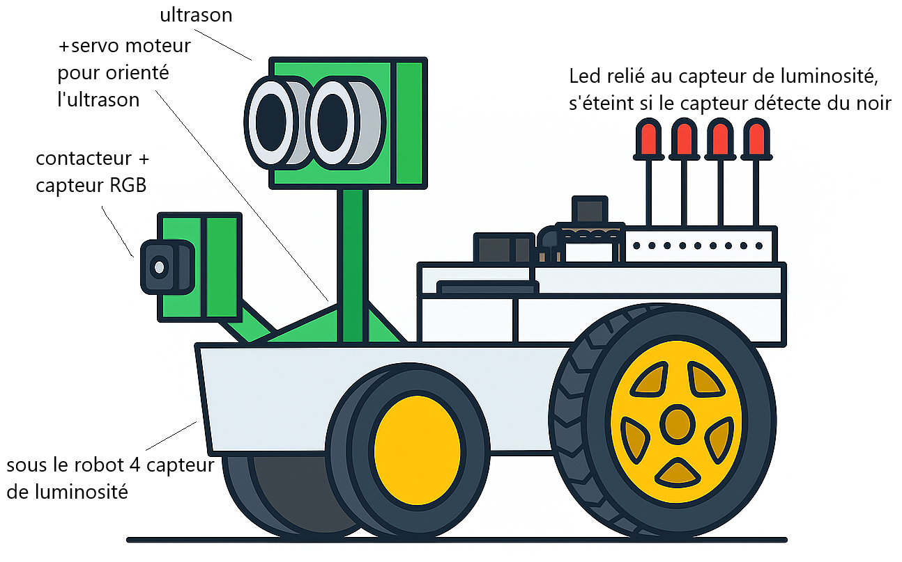
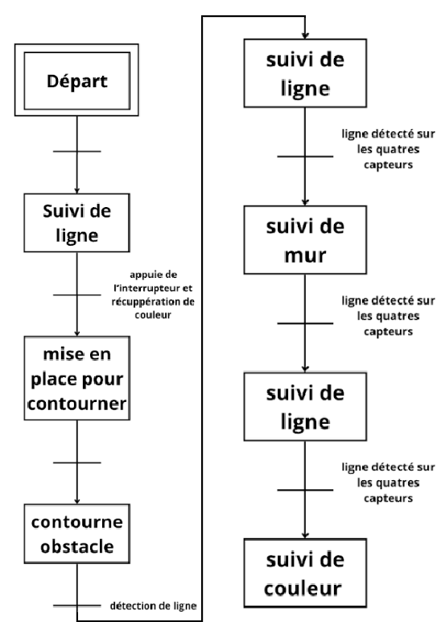

Vue d'ensemble du robot
Servomoteur pour orienter l'ultrason, capteur RGB à l'avant, 4 LDR sous le châssis

Architecture matérielle annotée
Ultrason + servomoteur, capteur RGB avec contacteur, 4 capteurs de luminosité + LEDs indicatrices

Algorithme global de la mission
Suivi de ligne → détection couleur → contournement d'obstacle → suivi de mur → choix de chemin